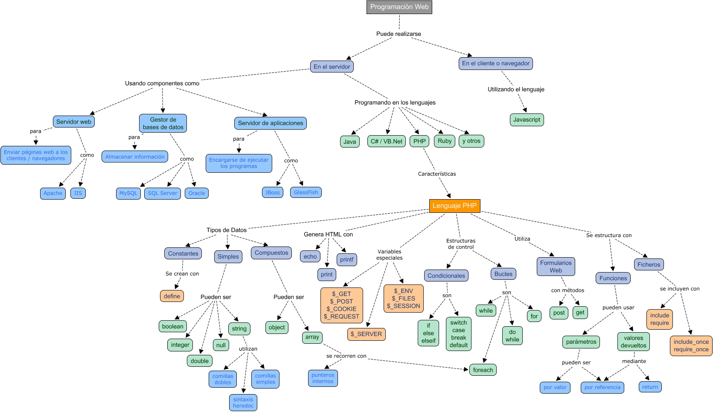
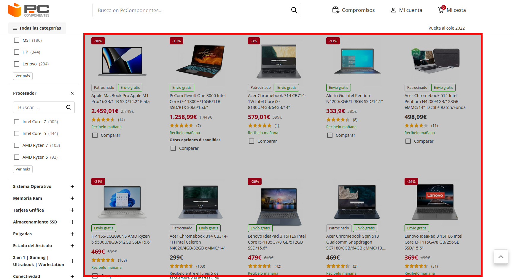
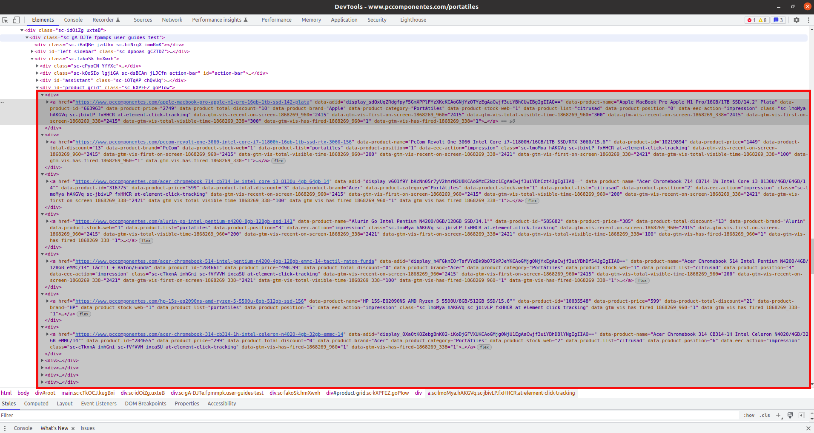
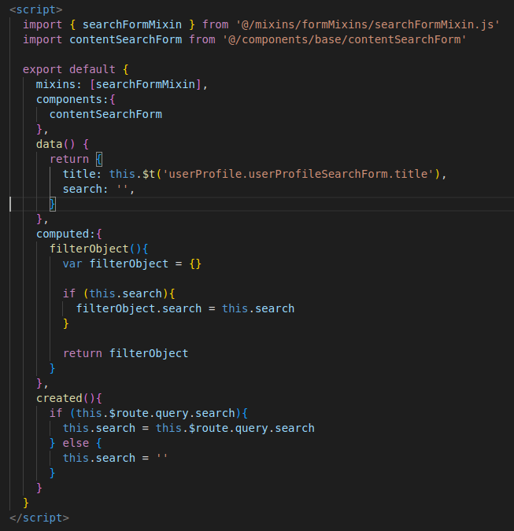

1.6. Execució del codi¶
1.6. Execució del codi¶
Durant el primer curs del cicle haureu pogut desenvolupar diferents programes consistents en fitxers que al seu torn contenen línies de codi en un llenguatge específic (Java, en este cas). ¿Què es necessita per a poder transformar este text en instruccions específiques per al sistema operatiu on s'executa eixe codi? En este punt és on entra en joc el concepte d' entorn d'execució .
Els elements d'un entorn d'execució varien depenent del llenguatge de programació que s'estiga utilitzant. Generalment sempre és necessari un compilador, intèrpret o màquina virtual i un conjunt de llibreries pròpies del llenguatge. Però pot constar de més elements com un depurador o un bucle d'esdeveniments.
Dit això, quins són els mecanismes per a l'execució del codi en l'àmbit de les aplicacions web? Per a contestar això, primer hauríem de diferenciar els diferents llenguatges de programació que es poden utilitzar, i en quins àmbits (client o servidor). És per això que, en els subapartats següents, revisarem primer alguns dels llenguatges de programació més rellevants en l'àmbit web, i a continuació es detallarà com s'executen en el costat servidor (PHP, Python i JavaScript) i en el client (JavaScript).
1. Llenguatges de programació¶
S'enumeren a continuació els llenguatges de programació més populars, en els diferents entorns:
Entorn Client¶
| Llenguatge | DESCRIPCIÓ |
|---|---|
| JavaScript | És el llenguatge per excel·lència en el desenvolupament d'entorn client. Hi ha un desenvolupament continu de frameworks i llibreries al voltant d'este llenguatge, ja no només en la programació client, sinó en el costat servidor (com s'ha vist anteriorment). Els principals frameworks per al desenvolupament d'aplicacions reactives basats en JavaScript són: React.js, Vue.js, Angular i Svelte. |
| TypeScript | TypeScript és un llenguatge de programació lliure i de codi obert desenvolupat i mantingut per Microsoft. És un superconjunt de JavaScript, que essencialment afig tipus estàtics i objectes basats en classes. Els principals frameworks de programació client reactius (esmentats anteriorment) suporten el desenvolupament tant en JavaScript com en TypeScript. |
| Python | Encara que moltíssim menys popular, també hi ha la possibilitat d'executar Python en el navegador, com s'il·lustra amb el projecte PyScript. |
Entorn Servidor¶
| Llenguatge | DESCRIPCIÓ |
|---|---|
| PHP | PHP és un llenguatge de programació d'ús general que s'adaptaespecialment al desenvolupament web. La seua última versió és PHP8. Este llenguatge es pot utilitzar sense cap tipus de framework per a desenvolupar aplicacions web, encara que també hi ha frameworks molt populars com CodeIgniter, Laravel, Symfony... |
| Python | Python és un llenguatge d'alt nivell de programació interpretat la filosofia del qual és posar èmfasi en la llegibilitat del seu codi. Per a programació web hi ha diversos frameworks, encara que els més destacats són Django i Flask. Cal destacar que este llenguatge s'utilitza en molts més àmbits, entre ells el de la ciberseguretat i el de la intel·ligència artificial. |
| JavaScript | JavaScript és un llenguatge de programació interpretat, dialecte de l'estàndard ECMAScript. Encara que va sorgir per al desenvolupament en entorn client, s'ha estés tant que han sorgit nombrosos frameworks en entorn servidor, i Nodejs n'és el més popular. |
| Ruby | Ruby és un llenguatge de programació interpretat i orientat a objectes. Ruby on Rails és el framework de programació web basat en Ruby més conegut. |
| Java | Java és un llenguatge de programació ràpid, segur i fiable per a codificar-ho tot, des d'aplicacions mòbils i programari empresarial fins a aplicacions de macrodades i tecnologies del costat del servidor. Com a frameworks web destaquen Spring i Hibernate. |
PHP¶
- Llenguatge de propòsit general dissenyat per al desenvolupament de pàgines web dinàmiques.
- En un principi, llenguatge no tipat.
- Actualment es troba en la versió 8; es recomana almenys utilitzar una versió superior a la 7.0.
- Codi incrustat en l'HTML.
- Instruccions entre etiquetes
<?phpi?>; per a generar codi dins de PHP, podem usar la instruccióecho. - Multitud de llibreries i frameworks (Laravel, Symfony, Codeigniter, Zend, ...).
La seua documentació és prou completa: https://www.php.net/manual/es/index.php.

Durant les unitats següents estudiarem PHP en profunditat.
Per tant, veiem que hi ha una gran varietat de llenguatges de programació, tant en client com en servidor, i és un àmbit en contínua evolució.
¿Quin és el millor llenguatge de programació? Esta és l'eterna pregunta que sentiràs al llarg de la teua carrera com a programador/a, i no hi ha una resposta fàcil. Potser la resposta més adequada siga: cadascun d'ells és bo per a una cosa, i el millor és tindre una mentalitat oberta, no lligar-se a cap d'ells, i tindre les bases de la programació clares.
Esta reflexió és d'especial interés si desenvolupes els teus propis projectes: l'elecció d'un llenguatge (o framework) o un altre et pot portar a l'èxit o al fracàs, que un projecte et resulte rendible o no, optimització de costos o no... Per tant, mantín una ment oberta i pensa que els llenguatges i tecnologies tenen caràcter passatger, estan per a ser utilitzats i no per a casar-se amb ells.
1.2. Execució¶
La lògica de la nostra aplicació es distribuïx entre el client i el servidor, i cadascun d'ells complix la seua funció específica. Per tant, la plataforma d'execució en estos dos àmbits ha de ser diferent:
- Costat servidor: la lògica programada s'executa en el sistema operatiu en què residix el codi.
- Costat client: la lògica s'executa en el navegador web.
A més de l'àmbit en què s'executa el codi, també cal particularitzar el mecanisme d'execució al llenguatge específic utilitzat (com s'ha esmentat en la discussió inicial d'este apartat, sobre l' entorn d'execució ).
A continuació es detalla com es dispara l'execució del codi programat, ja siga en el costat servidor davant d'una petició HTTP que prové del client web, o en el mateix navegador web davant d'una acció de l'usuari.
Abans de veure estos exemples, cal esmentar que el propòsit d'un servidor web és rebre peticions HTTP i enviar la resposta a eixes peticions. És possible que estes respostes les proporcione el mateix servidor web, o que haja de recórrer a extensions (o mòduls) pròpies, o a servidors d'aplicacions externs que executen el codi i retornen la resposta al servidor web (que la utilitzarà per a enviar la resposta final al client). Tot això es detallarà exhaustivament en el mòdul de Desplegament d'Aplicacions Web .
En els exemples següents es pressuposa que l'entorn d'execució és el de producció (el que utilitzen els usuaris finals). En l'entorn de desenvolupament se solen emprar servidors web més lleugers que proporcionen els mateixos frameworks de desenvolupament.
Llenguatge PHP¶
Depenent del servidor web, este llenguatge es pot executar de les maneres següents:
- Apache:
- Activació de mòdul intern (
mod_php) - Mitjançant servidor d'aplicacions (
phpFPM)
- Activació de mòdul intern (
- Nginx: només hi ha la possibilitat de delegar la tasca d'execució del codi a un servidor d'aplicacions, phpFPM en este cas.
Llenguatge Python¶
Igual que en el cas anterior, dependrà del servidor web que estiguem utilitzant:
- Apache:
- Activació de mòdul intern (
libapache2-mod-wsgi-py3, per a python3) - Mitjançant servidor d'aplicacions (gunicorn)
- Activació de mòdul intern (
- Nginx: només hi ha la possibilitat de delegar la tasca d'execució del codi a un servidor d'aplicacions (gunicorn).
Llenguatge JavaScript¶
Com s'ha esmentat anteriorment, este llenguatge, hui en dia, es pot executar tant en el costat client com en el costat servidor:
- En client (navegador web): els diferents navegadors actuals incorporen un entorn d'execució mitjançant el qual és possible executar codi JavaScript; no hi ha comunicació directa amb el sistema operatiu. L'execució del codi sol respondre a les accions de l'usuari, i el navegador proporciona tots els recursos perquè es puga executar.
- En servidor: per a poder executar codi JavaScript directament en un sistema operatiu, cal instal·lar prèviament l'entorn d'execució de Node.js. Este framework incorpora el seu propi servidor web per a ser utilitzat en un servidor de producció, encara que és possible utilitzar Apache o Nginx com a reverse proxy.
1.3. Integració amb els llenguatges de marques¶
Durant el primer curs hem aprés sobre els llenguatges de marques (HTML, entre altres) i programació de propòsit general. Qüestions:
- ¿Hi ha alguna relació entre estos dos tipus de llenguatges?
- ¿Per a què voldríem relacionar-los en una aplicació web?
Una possible resposta seria: cada tipus té un objectiu diferent, i la combinació de tots dos ens proporciona la possibilitat de crear pàgines web dinàmiques .
Creació de blocs en pàgines dinàmiques
Prenguem com a exemple la pàgina web següent:


¿Creus que el programador web ha creat tants blocs com productes s'han recuperat? ¿Es pot saber a priori quants productes retornarà la cerca?
La resposta a les dues preguntes és: no. Per tant, la pàgina s'ha de comportar de manera dinàmica; en algun moment s'ha de programar la lògica següent: per cada producte que s'ha de mostrar crea un bloc amb estes característiques determinades, siga quin siga el nombre de productes que s'han de visualitzar en la pantalla.
És ací on entra la màgia del binomi "llenguatge de programació" + "llenguatge de marques", mitjançant el qual podrem afegir sentències d'un llenguatge de programació a codi HTML, aportant-li un caràcter dinàmic al document web.
Esta combinació es produirà en el costat servidor o en el costat client, depenent de si:
- És una aplicació web basada en MVC (Model-Vista-Controlador): la combinació dels dos llenguatges es durà a terme en el costat servidor . El llenguatge de programació serà l'emprat en el costat servidor (PHP o Python), i el document web serà enviat al costat client des del servidor.
- És una aplicació web basada en serveis REST : en este cas, la combinació dels dos llenguatges es durà a terme en el costat client . El llenguatge de programació serà l'emprat en el costat client, JavaScript en el nostre cas (també podria ser TypeScript). El client consumirà els serveis web del servidor i intercanviaran informació en format JSON. El client serà l'encarregat de modificar l'HTML de manera dinàmica.
Vegem un exemple amb una llista simple de productes, per al cas de MVC. En l'exemple de l'esquerra veiem que hem de crear tants blocs de productes com productes que cal representar; en l'exemple de la dreta, s'ha introduït un bucle mitjançant PHP que farà que, per cada producte de l'array de productes, es visualitze un bloc amb les seues dades corresponents:

En este cas, veiem que s'ha introduït codi PHP amb un etiquetatge especial, que indica que eixe bloc del fitxer de marques conté codi PHP.
A continuació es mostra un altre exemple, en este cas d'integració d'un llenguatge de programació del costat client amb el llenguatge de marques HTML. Es tracta d'un component programat mitjançant el framework Vue.js:


En este cas també veiem que hi ha atributs amb símbols com : o @ en l'etiquetatge que apunten a variables del codi JavaScript.
Estos exemples només exemplifiquen la integració dels llenguatges de marques amb un llenguatge de programació, sense ànim d'aprofundir-hi més en este moment del curs.
2. Servidor web¶
Programari que rep peticions HTTP (GET, POST, DELETE, ...). Retorna el recurs sol·licitat (HTML, CSS, JS, JSON, imatges, etc...)
El producte més implantat és Apache Web Server (https://httpd.apache.org), creat en 1995.
- Programari lliure i multiplataforma.
- Sistema de mòduls dinàmics → PHP, Python, Perl.
- Utilitza el fitxer
.htaccessper a la seua configuració.
En l'actualitat, Ngingx (https://www.nginx.com) ha guanyat mercat respecte a Apache. Es tracta d'un producte més modern (2004) i que en determinats escenaris té un rendiment millor que Apache.
En este enllaç podem observar una comparativa de servidors web: https://w3techs.com/technologies/history_overview/web_server/ms/q.
3. Servidor d'Aplicacions¶
Programari que oferix serveis addicionals als d'un servidor web:
- Clustering.
- Balanceig de càrrega.
- Tolerància a fallades.
Tomcat (http://tomcat.apache.org/) és el servidor d'aplicacions open source i multiplataforma de referència per a una arquitectura Java. Conté un contenidor web Java que interpreta Servlets i JSP.
Estudi de servidors web i servidors d'aplicacions
Tant els servidors web com els servidors d'aplicacions els estudiarem en profunditat en el mòdul de "Desplegament d'Aplicacions Web".